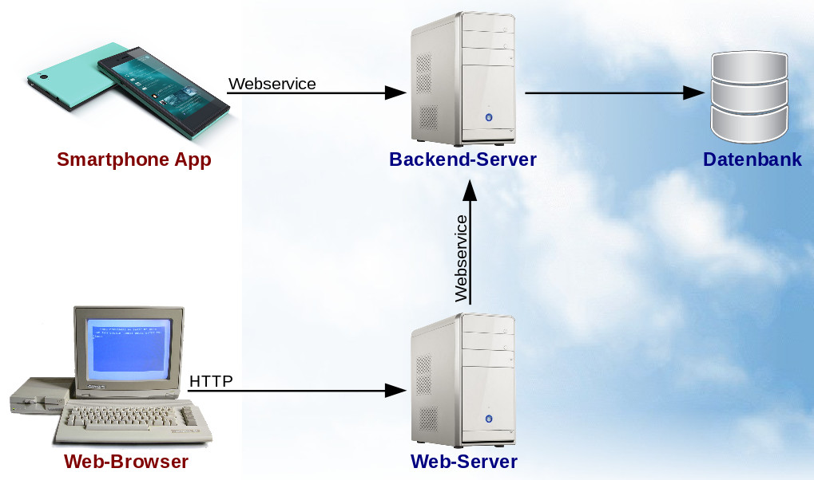
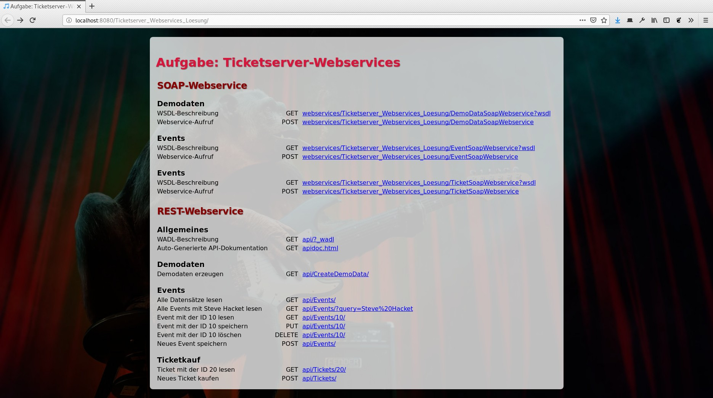
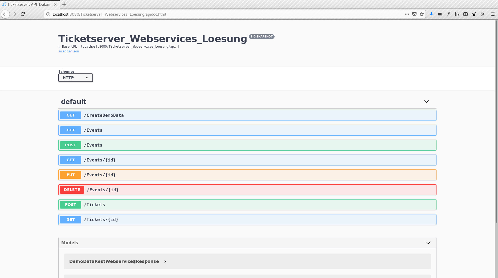

Die Fallbeispiele in „Verteilte Systeme” haben dich inspiriert, dich nach dem Studium mit einer eigenen Anwendung selbstständig zu machen. Als ob es davon nicht schon genug gäbe, willst du ein Webportal zum Kauf und Verkauf von Konzertkarten programmieren. 🎟️ Doch im Gegensatz zur Konkurrenz willst du dich durch effiziente Prozesse und faire Preise abheben. Außerdem planst du auch eine Smartphone-App anzubieten. Aus diesem Grund hast du dich für eine verteilte Architektur mit mehreren Servern entschieden:
|  | |
|  |  |
Leider bist du dir noch nicht sicher, ob du SOAP- oder REST-Webservices nehmen sollst. 🤯 Um die Vor- und Nachteile besser bewerten zu können, hast du deshalb entscheiden, beides als Prototyp auszuprogrammieren. 🛠️
Los geht es mit der Klasse EventSoapWebservice. Programmiere sie so aus, dass sie folgende Operationen ermöglicht. Die Klasse EventBean bietet dir hierfür bereits fertige Implementierungen, die du einfach aufrufen kannst.
| 🔍 | Suchen nach Veranstaltungen anhand eines Suchbegriffs |
| 👓 | Suchen einer Veranstaltung anhand ihrer Id |
| 📝 | Anlegen einer neuen Veranstaltung |
| 🏗️ | Aktualisieren einer bereits vorhandenen Veranstaltung |
| 🗑️ | Löschen einer Veranstaltung |
Programmiere danach nach demselben Schema die Klasse TicketSoapWebservice fertig. Auch hier kannst du auf die TicketBean zugreifen, musst über den Webservice jedoch nur folgende Operationen anbieten:
| 💸 | Kaufen von Tickets zu einer Veranstaltung |
| 👓 | Suchen eines Tickets anhand seiner Id |
Programmiere für beide Webservices einen kleinen Java-Client, der es ermöglicht, Veranstaltungen zu suchen. Es reicht dabei, wenn es sich um ein einfaches Kommandozeilenprogramm handelt, das nur diese eine Funktion auf dem Server aufrufen kann. Das Programm soll den Anwender daher einfach nach der Sucheingabe fragen und alle gefundenen Ergebnisse ausgeben.